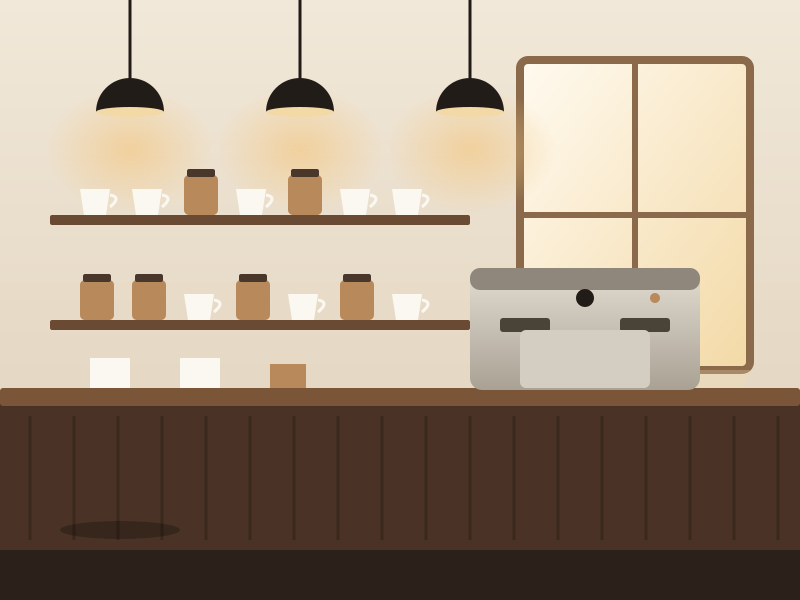
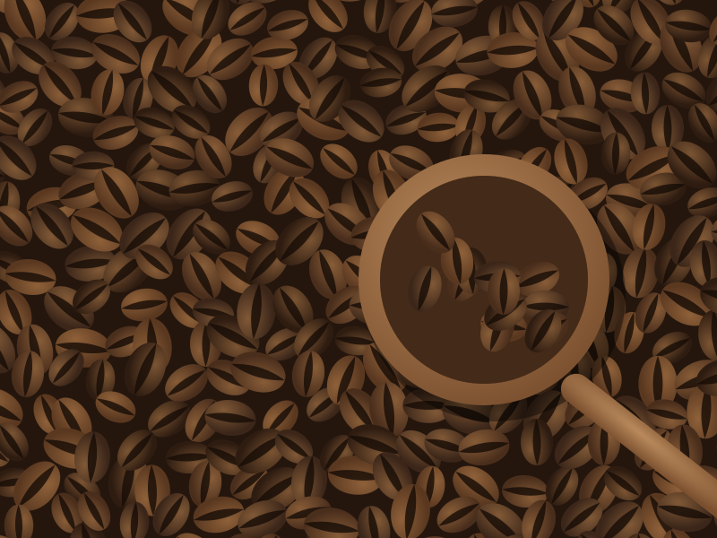
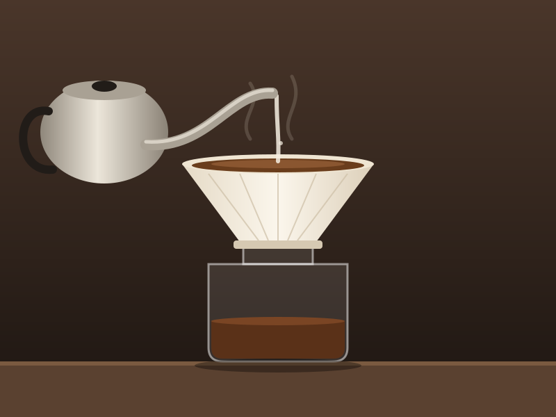
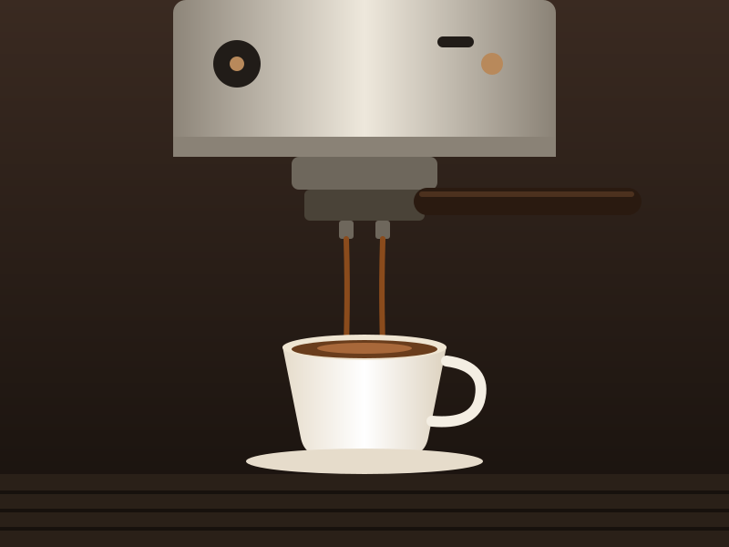
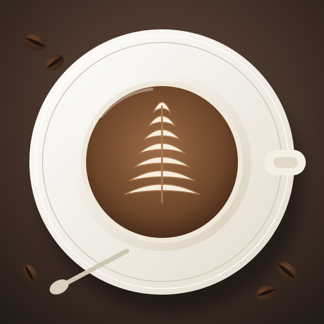

О нас
Кофе, который мы делаем с вниманием
MOKA COFFEE — небольшая кофейня, где всё подчинено вкусу: зерно, вода, время и тишина вокруг чашки.
История
Всё началось с одной чашки
MOKA COFFEE родилась из простого желания: сварить кофе так, чтобы его хотелось растянуть. Мы начали с небольшой стойки, нескольких сортов зерна и убеждения, что хороший кофе не требует лишних слов.
С тех пор принцип не изменился: в меню немного позиций, но каждую мы готовим внимательно и с уважением к зерну и к гостю.

Философия
Меньше, но лучше
-
Вкус прежде всего
Мы подбираем рецепт под зерно, а не наоборот: не прячем характер кофе за сиропами и не пережариваем ради привычной горечи.
-
Честность
Рассказываем, откуда зерно и как оно обработано, и не обещаем того, чего нет в чашке.
-
Внимание
Кофе — это пауза. Мы не торопим гостей и оставляем в зале тишину, чтобы вкус можно было услышать.
Зерно
Как мы выбираем зерно
Смотрим на происхождение
Предпочитаем небольшие партии с понятной историей: регион, высота, способ обработки.
Пробуем вслепую
Новую партию дегустируем без этикеток, чтобы оценивать вкус, а не название.
Подбираем рецепт
Настраиваем помол, температуру воды и время под конкретное зерно.
Подаём в лучшей форме
Держим небольшой запас и обновляем зерно, пока оно не потеряло аромат.

Бариста
Люди за стойкой
-
Точность
Взвешивают дозу и следят за временем экстракции, чтобы вкус не зависел от настроения.
-
Вкус
Пробуют каждый рецепт и подправляют его, пока чашка не станет сбалансированной.
-
Гостеприимство
Подскажут, чем отличаются напитки, и подберут вариант под ваш вкус — без снисходительности.
-
Ремесло
Следят за молоком, латте-артом и чистотой оборудования: из мелочей складывается вкус.
Галерея
Как рождается чашка
-

Заваривание в воронке -

Эспрессо из рожка -

Латте-арт